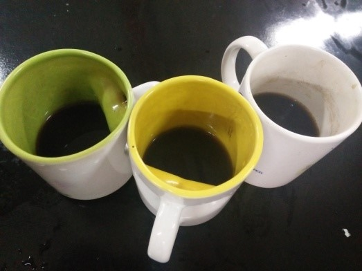
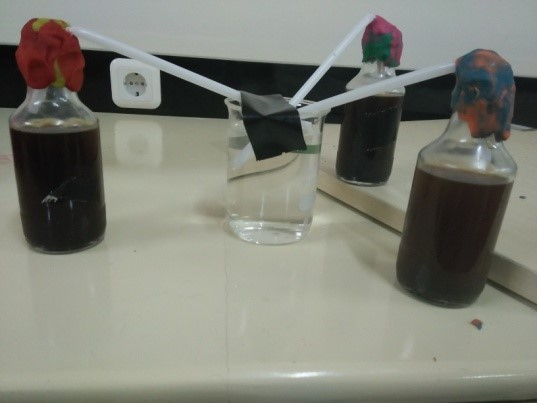
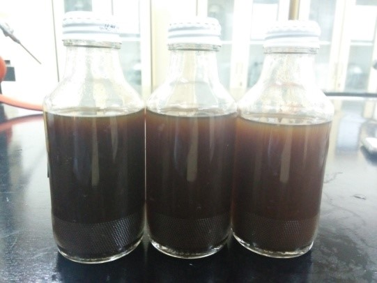

1. Pembuatan Seduhan Kopi

Bubuk kopi dan gula dilarutkan dalam air panas dengan perbandingan air 200 ml untuk kopi : gula = 8 : 25 dan didinginkan
2. Fermentasi

Ditambahkan 6 gram ragi dan difermentasi selama 2-3 hari
3. Tahap Pematangan

Dilakukan pendinginan untuk menciptakan aroma yang khas dan rasa yang segar, kemudian dilakukan penyaringan
4. Tahap Pengemasan
Hasil fermentasi kemudian dikemas kedalam botol 250 mL dan siap dipasarkan